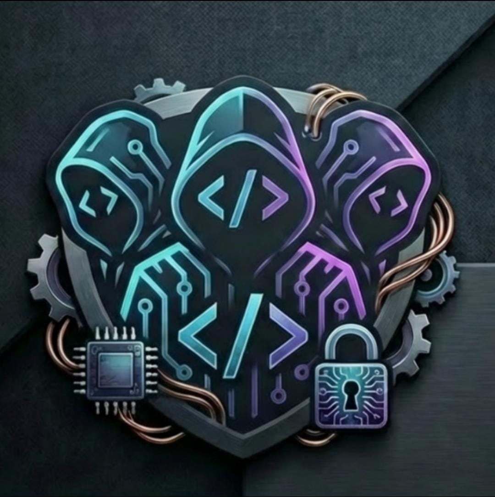

About Me
I am a Computer Engineering student (expected graduation: 2026) with a strong passion for back-end development and network infrastructure. Alongside my programming skills in Java, Python, and C, I possess advanced practical knowledge in computer networks, including OSPF routing and Datacom equipment configuration. I am highly skilled in network troubleshooting, effectively identifying and resolving link flaps and GBIC issues. Currently expanding my skills to become a Full Stack Developer, I am highly motivated to leverage my comprehensive background in both software and infrastructure to solve complex, real-world challenges in a dynamic tech environment.
Projects
Medical E-Learning Platform
Tech Stack: Next.js, TypeScript, Node.js, Docker, PostgreSQL (Supabase), Mux
Developed and successfully sold a custom e-learning platform tailored for medical students. Engineered a scalable architecture using Node.js and Next.js, integrating Supabase for secure database management and authentication. Implemented high-quality video streaming via the Mux API and containerized the environment with Docker for optimized deployment.

Cognull - Digital Solutions
Tech Stack: Next.js, React, Node.js, Vercel
Co-founded and developed a software development agency focused on delivering innovative digital solutions. Engineered the company's institutional website and currently manage client projects, applying full-stack development skills to create scalable, high-performance web applications.
Technical Skills
- Backend: Java, Node.js, Python, C
- Frontend: Next.js, TypeScript, React, HTML, JavaScript
- Database & DevOps: PostgreSQL, Supabase, Docker, Vercel
- Infrastructure & Networking: OSPF Routing (Datacom), Network Troubleshooting (GBIC faults, Link Flaps)
- Languages: Portuguese (Native), English (B1 - Actively studying for B2)
Education & Experience
Bachelor of Science in Computer Engineering
Uniube - Uberaba, MG, Brazil | 02/2022 – Expected: 2026
Network Infrastructure Intern
TMKnet (ISP) - Uberaba, MG, Brazil
- Assisted in the configuration, monitoring, and maintenance of network infrastructure using Datacom equipment.
- Performed daily network troubleshooting, successfully identifying and resolving physical and logical issues such as link flaps and GBIC faults.
- Worked hands-on with OSPF routing protocols to ensure high availability and network stability for the provider.
Production Assistant
Gafs & Rental Y - Uberaba, MG, Brazil
- Maintained high organizational standards and teamwork in fast-paced production environments.
- Developed strong attention to detail and a cooperative mindset to ensure final product quality.
Contact
- Location: Uberaba, MG - Brazil
- Email: luccapontesmenezes.dev@gmail.com
- LinkedIn: Lucca Pontes Menezes
- GitHub: github.com/SEU_USUARIO